Version 0.47.0 · Stand 20.11.2026 · Screenshots: macOS-Version (M1 Pro), dunkles Design. Die Windows-Version hat dieselbe Oberfläche, nur andere KI-Engines.
Rechercheauftrag an ChatGPT
Vergleiche Shortme mit Opus Clip, Vizard, Klap, Submagic, Captions, CapCut (Auto-Clips) und Descript: Wo ist dort der Weg „langes Video → fertige Shorts“ schneller, klarer oder angenehmer?
Bewerte jeden Bildschirm unten: Layout, Hierarchie, Wording, Anzahl Klicks, Konsistenz. Was ist überladen, was fehlt?
Fortschritt: Wie zeigt man eine 25–35-minütige lokale KI-Verarbeitung so, dass sie sich kürzer anfühlt und trotzdem ehrlich ist? Was kann man währenddessen schon nutzbar machen, etwa erste fertige Clips?
Review und Clipübersicht: Wie sichtet man 8–20 Vorschläge am schnellsten? Wie trennt man KI-Urteil, eigene Freigabe und Lernbewertung, ohne zu verwirren?
Editor: Was macht das Schnittfenster gut oder schlecht? Gesucht sind Ideen für Trimmen, Untertitel, Bildausschnitt und Export – auch Tastatur-Workflows.
Einstellungen und Vorlagen: Welche Optionen sollten Standard, welche „Erweitert“, welche weg sein?
Gib jede Empfehlung mit Aufwand (klein, mittel, groß), Nutzen und Beispiel aus einem Konkurrenzprodukt an, sortiert nach Nutzen.
1. Was die App ist
Zweck: Aus langen Videos (Vlogs, Podcasts, Interviews, Twitch-Streams und VODs; 10 min bis 6 h) entstehen automatisch vertikale Shorts (9:16, auch 1:1 und 16:9). Jeder Clip bekommt animierte Untertitel, einen Titel, einen automatischen Bildausschnitt und optional einen Cold Opener.
Nutzer: eine Person, der Entwickler selbst als Content Creator. Die App ist privat, wird nicht verkauft, hat keine Konten.
Technik: Electron + React. Alles läuft lokal und offline, ohne Cloud-KI. Zwei Rechner:
Windows-PC mit NVIDIA-GPU: Engines 1–4, wählbar
MacBook M1 Pro mit 16 GB: nur „Engine Mac“
Oberfläche und Funktionen sind auf beiden gleich.
Sprache der Oberfläche: Deutsch. Design: dunkel, Glas-Ebenen, abgerundete Pillen-Knöpfe, Bewegungen nach Apple-Vorbild. Hintergrund wahlweise Glas oder Schwarz.
Ablauf in einem Satz
Der Weg geht so:
Link oder Datei laden und Optionen wählen, dann „Clips finden“.
Verarbeitung: Transkribieren → Analysieren → Clips finden, etwa 25–35 min für ein 26-min-Video auf dem Mac.
Clipliste und Review: freigeben, prüfen oder verwerfen.
Editor: Feinschnitt, Untertitel, Bildausschnitt.
Export, dann Upload.
Was im Hintergrund passiert (für das Verständnis der Wartezeit)
Jeder fertige Clip wird gerendert und von der KI nochmal geprüft (Anfang, Pointe, Ende, eigenständig verständlich).
~25–30 min
2. Navigation (Seitenleiste)
Die Seitenleiste ist schwebend, nur mit Icons, links. Sie hat 7 Punkte:
Start
Projekte
Exporte & Upload
Vorlagen: Untertitel-, Animations- und Titelstile
Live: Twitch-Puffer
Werkzeuge: Live, Werkbank, Lernen, Modelle
Einstellungen
Oben links stehen Logo und Version mit Datum. Ein kleiner Laufstatus unten links bleibt auf jedem Bildschirm sichtbar, solange ein Job läuft.
3. Start und Erstellen-Dialog
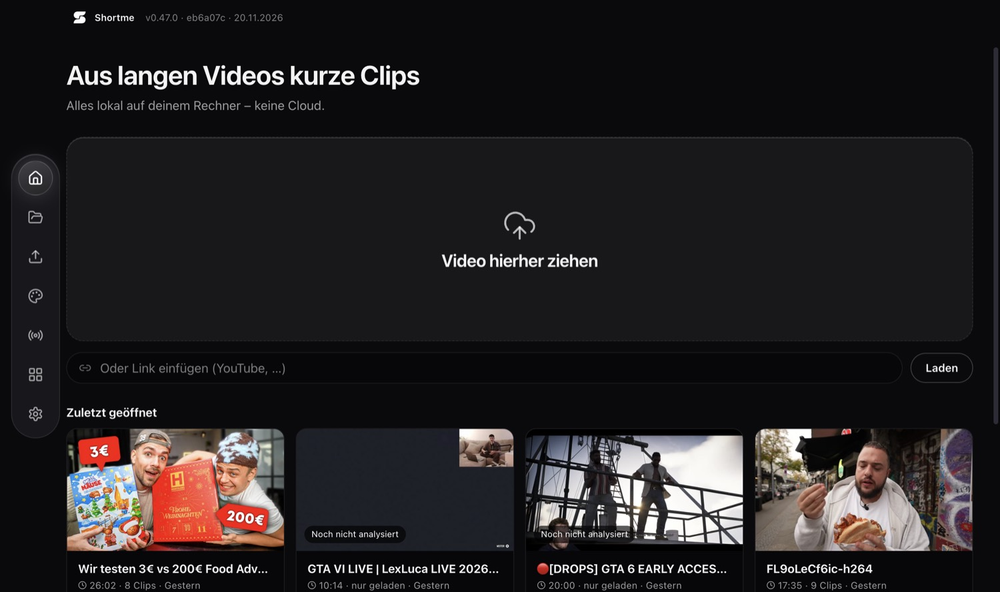
Start: große Drop-Zone „Video hierher ziehen“, darunter ein Linkfeld mit „Laden“ und „Zuletzt geöffnet“ als Kachelreihe.
Nach „Laden“ (YouTube, Twitch-VOD, Twitch-Clip oder Datei) öffnet sich ein Bottom-Sheet. Bei Twitch kann man vorher einen Zeitbereich ziehen. Der Download zeigt Tempo und Restzeit und lässt sich pausieren oder abbrechen.
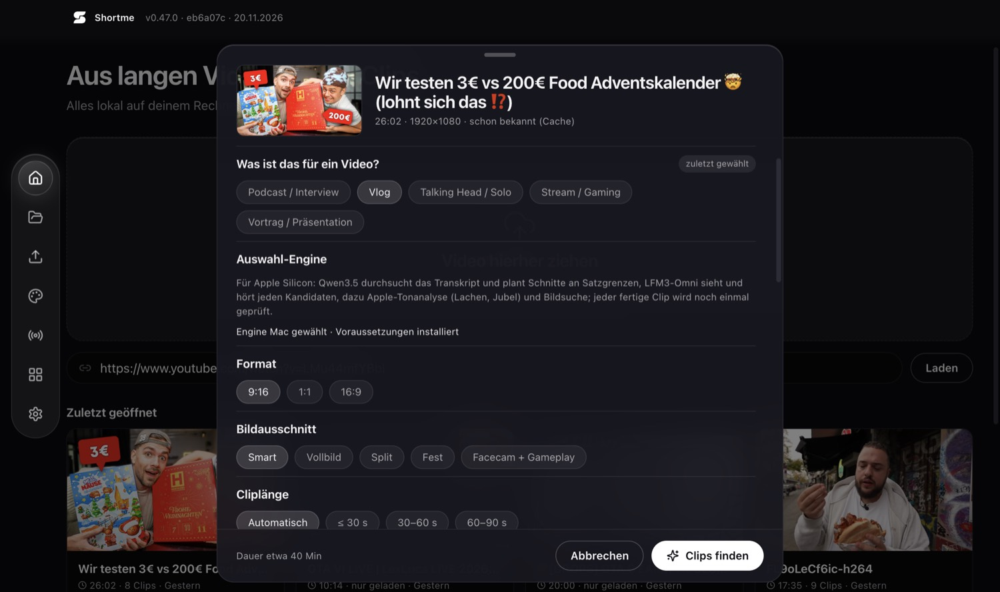
Erstellen-Dialog, oberer Teil.
Der Dialog zeigt oben Vorschaubild, Titel, Dauer und Auflösung. Darunter folgen die Optionen:
Was ist das für ein Video? Podcast/Interview, Vlog, Talking Head/Solo, Stream/Gaming, Vortrag/Präsentation. Der Typ wird automatisch erkannt oder gemerkt.
Auswahl-Engine mit Kurzbeschreibung und Status der Voraussetzungen. Auf Windows ist sie wählbar, auf dem Mac fest.
Unten stehen „Dauer etwa 40 Min“ (aus gemessenen Werten dieses Rechners), „Abbrechen“ und „Clips finden“.
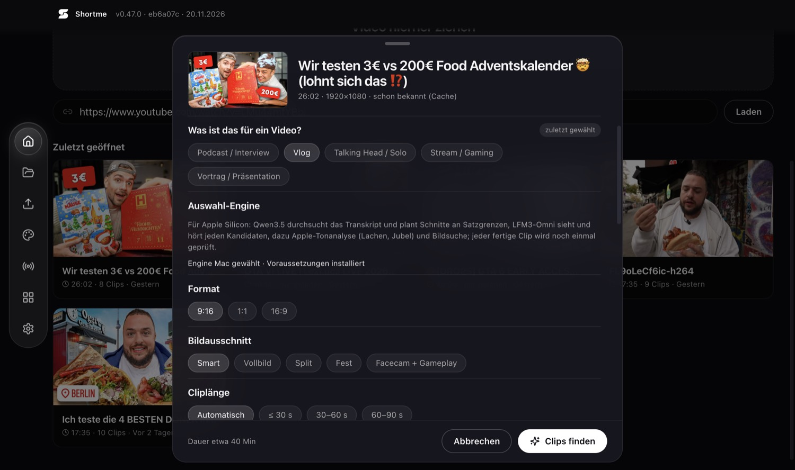
Erstellen-Dialog, unterer Teil (Untertitel-Stile, Cold Opener, Anzahl, Workflow).
4. Verarbeitung
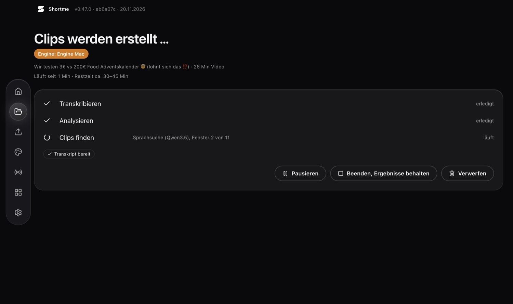
Verarbeitung: drei Phasen mit Status statt Prozentbalken, Detailzeile der Engine, „Transkript bereit“.
Überschrift „Clips werden erstellt …“, eine Marke für die Engine, Videotitel und -länge.
„Läuft seit X Min · Restzeit ca. 30–45 Min“: die Restzeit als Spanne. Während „Clips finden“ rechnet die Engine selbst aus der echten Restarbeit.
Drei Phasen (Transkribieren, Analysieren, Clips finden), jeweils erledigt, läuft oder ausstehend. Bei Clips finden steht eine Detailzeile, z. B. „Sprachsuche (Qwen3.5), Fenster 2 von 11“ oder „Clip 3 von 8 rendern“.
Zwischenstände als Chips: „Transkript bereit“ und vorläufige Clips, sobald sie vorliegen.
Knöpfe: Pausieren, Beenden mit Ergebnissen, Verwerfen (mit Rückfrage), Fortsetzen.
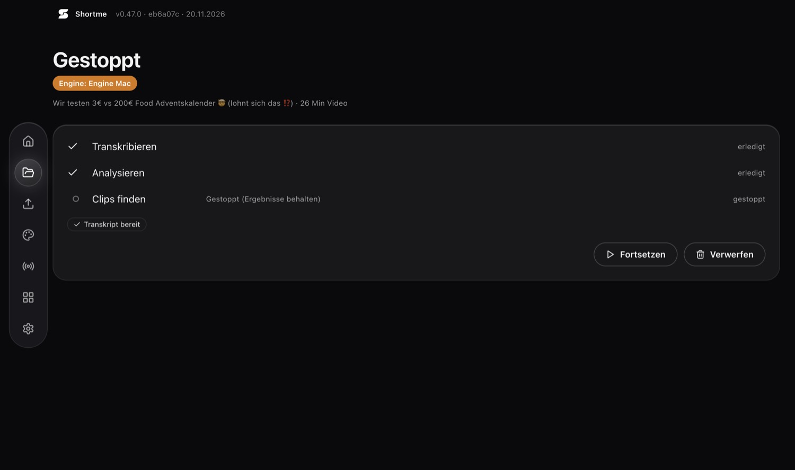
Nach „Beenden, Ergebnisse behalten“.
5. Projekte
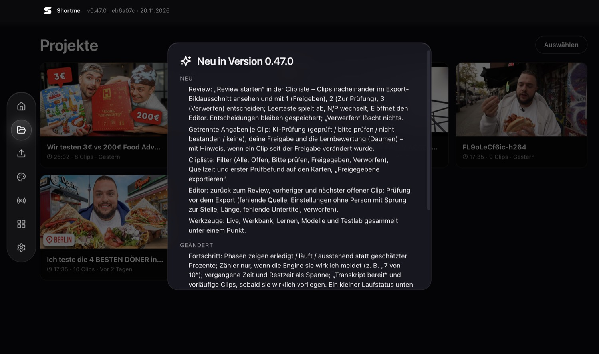
Projekte: Kacheln mit Vorschaubild, Titel, Dauer, Clip-Anzahl oder „nur geladen“, Datum; Etikett „Noch nicht analysiert“.
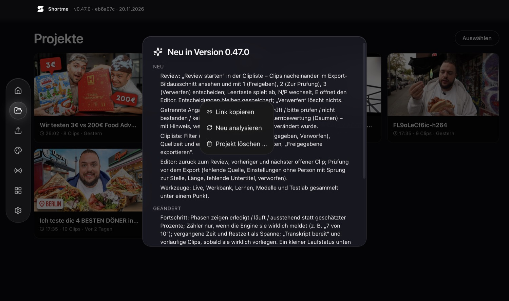
Rechtsklick: Link kopieren, Neu analysieren, Projekt löschen. „Auswählen“ oben rechts löscht mehrere (Alle, Letzte 30 Tage, Keine).
Exportieren: öffnet einen kurzen Dialog mit Prüfhinweisen und startet erst nach Bestätigung; der Fortschritt steht dann im Knopf
Links – Transkript: Das aktuelle Wort ist hervorgehoben, außerhalb des Clips ist der Text grau. Es gibt „Text ändern“ (korrigiert den Untertitel) und „Herausschneiden“ (Wörter markieren, um Stellen aus dem Clip zu schneiden).
Mitte:
Quellbild mit Ausschnittrahmen („Quelle · Person anklicken“ wählt, wem die Kamera folgt)
9:16-Vorschau, identisch mit dem Export
Rechts – Reiter:
Untertitel:
Vorlage wählen, „Speichern als …“, Überschreiben, als Standard setzen, auf alle Clips anwenden, Import, Export
zuerst Größe, Position und Farbe des aktiven Worts
unter „Erweitert“: Schrift, Zeilenabstand, Wörter pro Zeile, Farben, Großbuchstaben, Kontur, Schatten, Glow, Box, KI-Hervorhebung, Sicherheitszonen (TikTok, Reels, Shorts)
Animation: Erscheinen (Keine, Einblenden, Pop, Hochgleiten, Blur-In) mit Dauer, aktives Wort (nur Farbe, Farbe + Vergrößerung, Farbe + Glow-Puls), Dämpfung, Wort für Wort oder ganze Zeile, Verschwinden – getrennt für Untertitel und Titel.
Bildausschnitt: Inhaltstyp; für den ganzen Clip Smart, Fest oder Vollbild; für die aktuelle Einstellung Smart, Fest, Vollbild, Split oder Facecam + Gameplay; Facecam suchen; Quelle anzeigen.
Unten – Zeitleiste:
Abspielen, ±5 s, Ton, Lautstärke, Zeit
„Export nach Kürzen: 18.6 s“
Werkzeuge: Ab hier markieren, Ende prüfen, Satz verlängern, Satz kürzen
Filmstreifen und Wellenform des Quellvideos; darauf der Clipbereich mit Griffen und Einstellungs-Segmenten (Layout je Kameraeinstellung)
Der Export-Dialog prüft: fehlende Quelle, Einstellungen ohne Person (mit Sprung zur Stelle), Länge, fehlende Untertitel, verworfener Clip, KI-Hinweise.
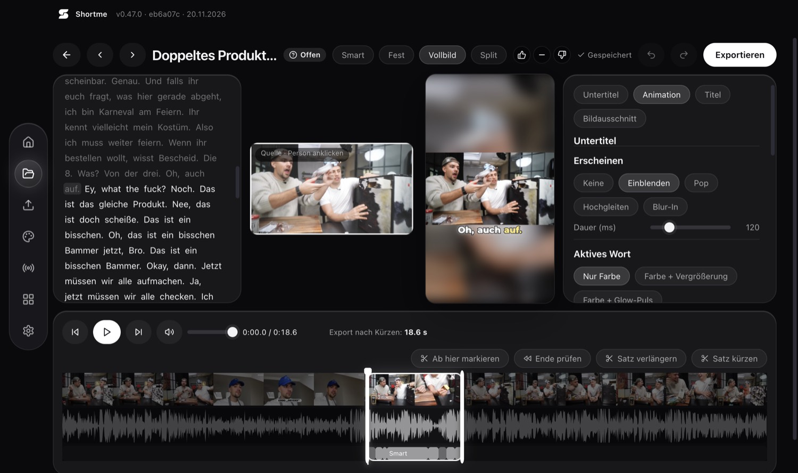
Reiter Animation.
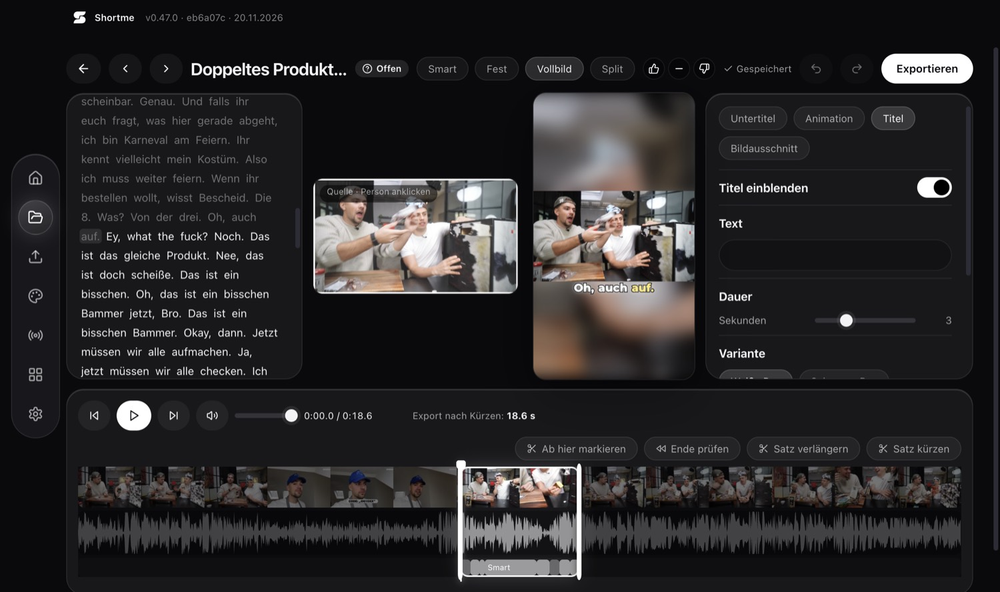
Reiter Titel.
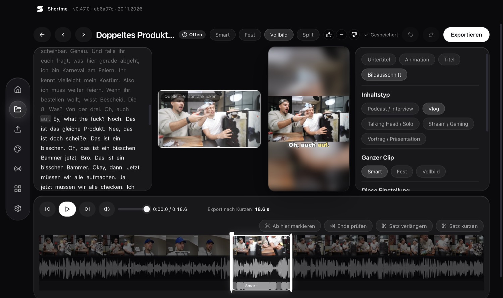
Reiter Bildausschnitt.
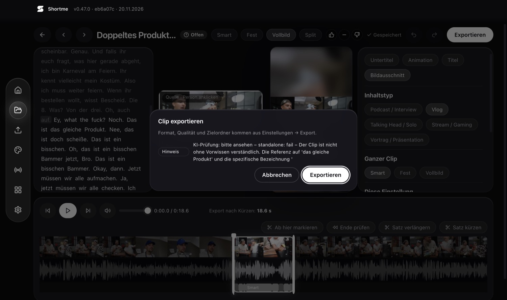
Export-Dialog mit Prüfhinweis.
9. Exporte & Upload
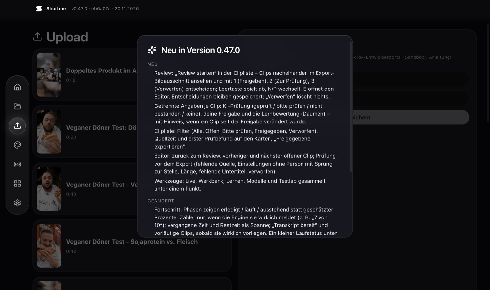
Liste der exportierten Clips, Ziel TikTok, YouTube oder Instagram, Text und Beschreibung, Verbinden mit eigenen API-Schlüsseln, Entwürfe hochladen.
10. Vorlagen (Stil-Studio)
Dieselben Regler wie im Editor, aber als globale Vorlagen mit großer Vorschau. Es gibt drei Reiter: Untertitel, Animation, Titel.
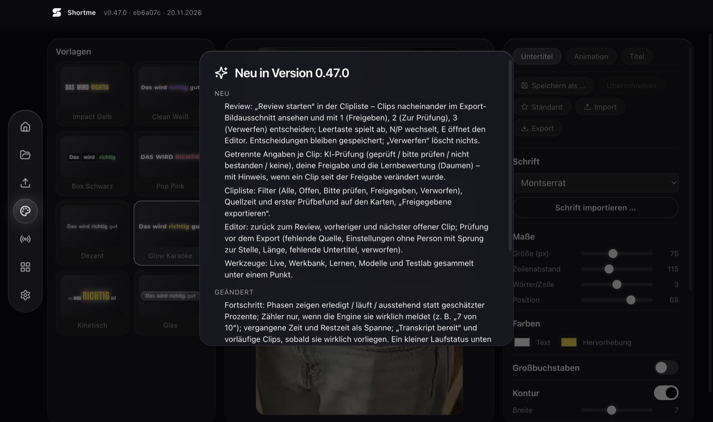
Vorlagen – Untertitel.
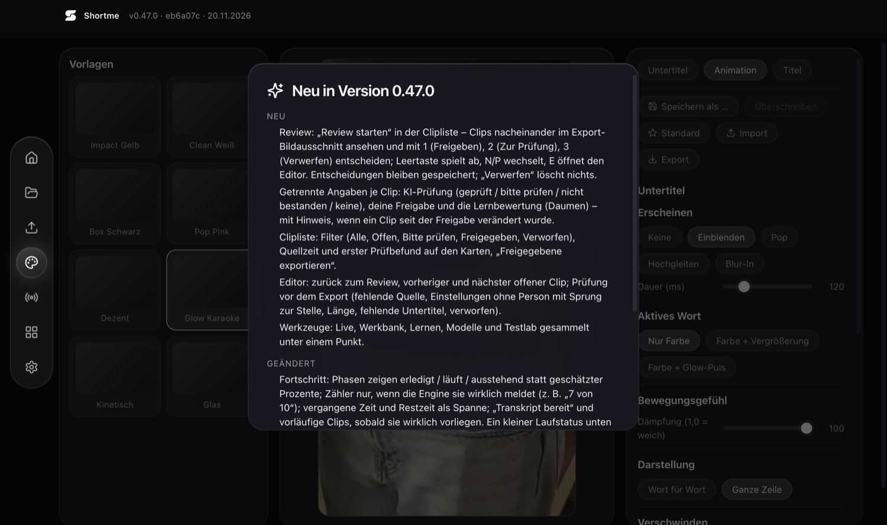
Vorlagen – Animation.
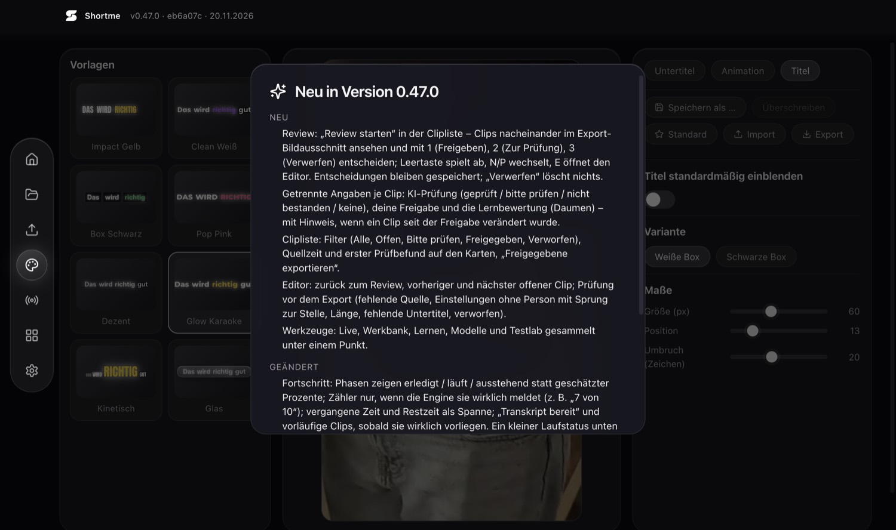
Vorlagen – Titel.
11. Live (Twitch)
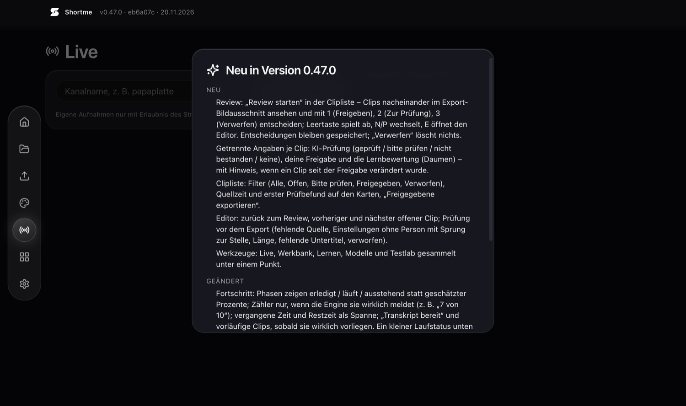
Live: „Puffer starten“ nimmt einen laufenden Twitch-Stream rollierend auf (5–60 min). Mit einem Knopf sichert man die letzten Minuten unter „Gesicherte Ausschnitte“ und macht daraus Clips. Twitch-Chat kann als Signal fürs Ranking dienen.
12. Werkzeuge
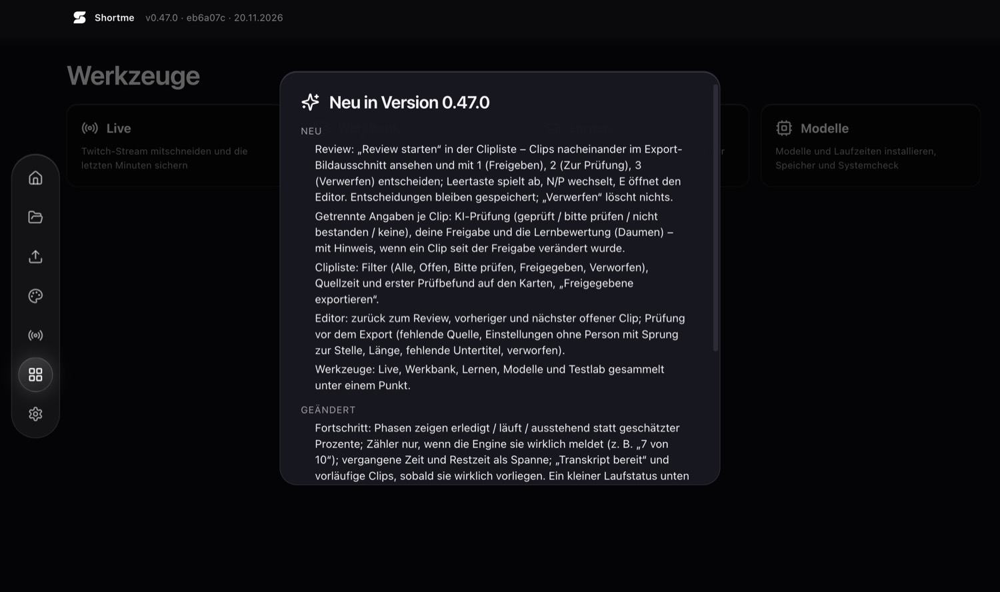
Werkzeuge als Übersicht: Live, Werkbank, Lernen, Modelle (dazu Testlab, wenn eingeschaltet).
Werkbank: Stapelverarbeitung vieler Videos, z. B. eigene veröffentlichte Shorts mit den Vorschlägen der App vergleichen. Knöpfe: Hinzufügen, Pausieren, Videodatei nach Auswertung löschen.
Lernen: Bewertungen und Korrekturen werden als Lerndaten gesammelt. Optional gibt es ein schwaches Trend-Signal aus der YouTube-Suche. Man kann die Daten exportieren oder alle löschen.
Modelle: Liste der lokalen KI-Modelle mit Größe und Status, „Weitere Modelle“, Import „Von USB“. Fehlende Modelle lädt die App beim Start selbst.
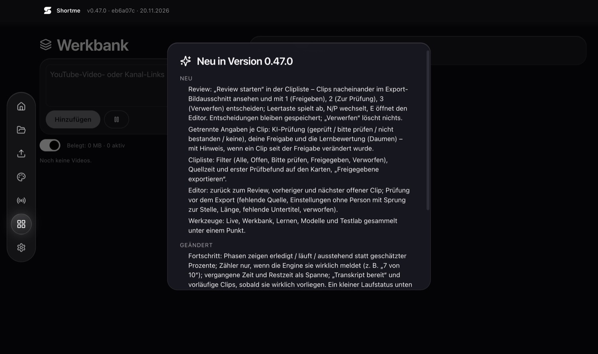
Werkbank.
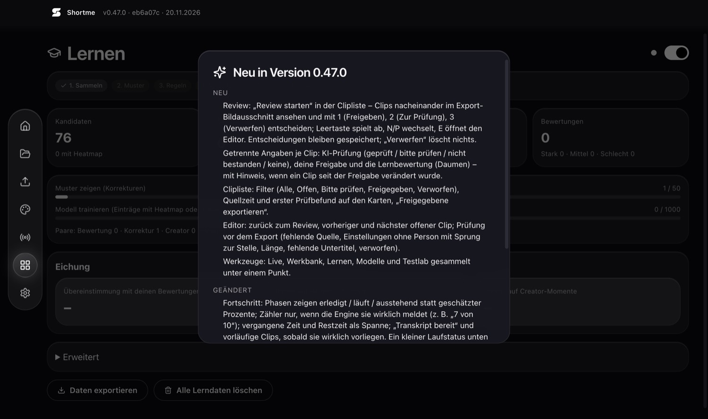
Lernen.
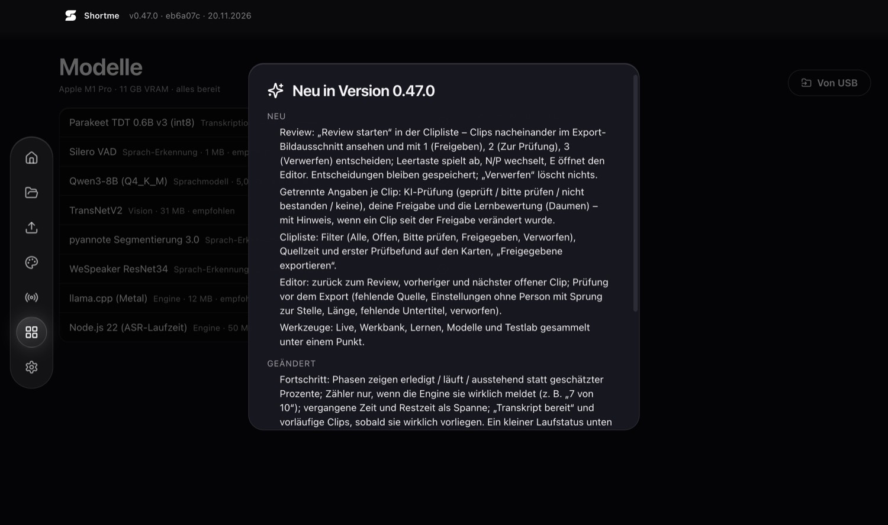
Modelle.
13. Einstellungen
Es gibt vier Reiter:
Allgemein:
Hintergrund Glas oder Schwarz
Export-Profil TikTok, Reels, Shorts oder Eigenes
Qualität Normal, Hoch oder Maximal
Encoder Auto, NVENC oder CPU
Untertitel eingebrannt, als SRT oder beides
Dateinamen nach KI-Titel, Zielordner
Modelle & Updates: Modellverwaltung, „Nach Updates suchen“ (In-App-Updates über GitHub-Releases), Patch Notes der aktuellen Version.
Konten & Dienste:
Twitch: Chat als Signal, Kanal-Layouts Facecam + Gameplay, Live-Puffer-Länge, Token
YouTube-Anmeldung bei Bot-Prüfung (Firefox-Cookies oder Datei)
Bewertungen über ein privates GitHub-Repo teilen
System: Systemcheck, Logs öffnen, Fehlerbericht exportieren, Testlab-Schalter für die Entwicklung.
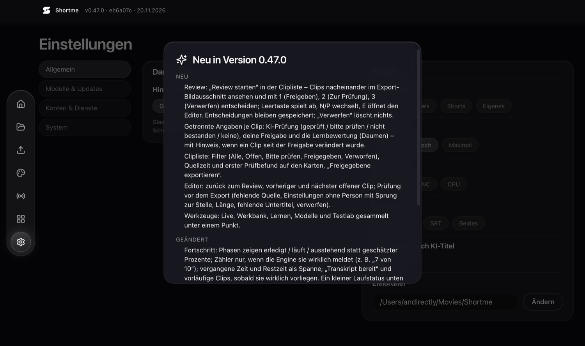
Einstellungen – Allgemein.
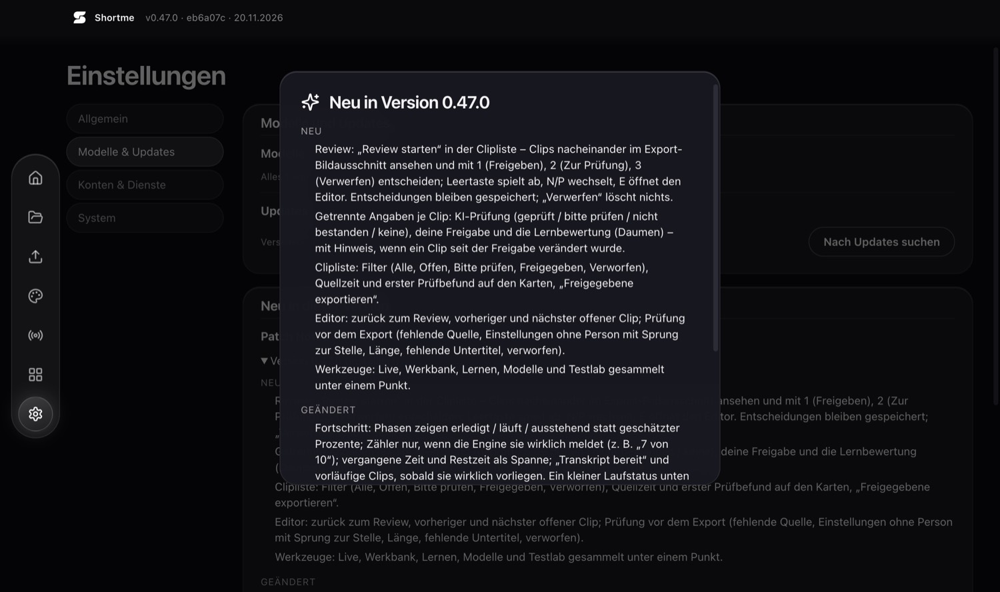
Modelle & Updates.
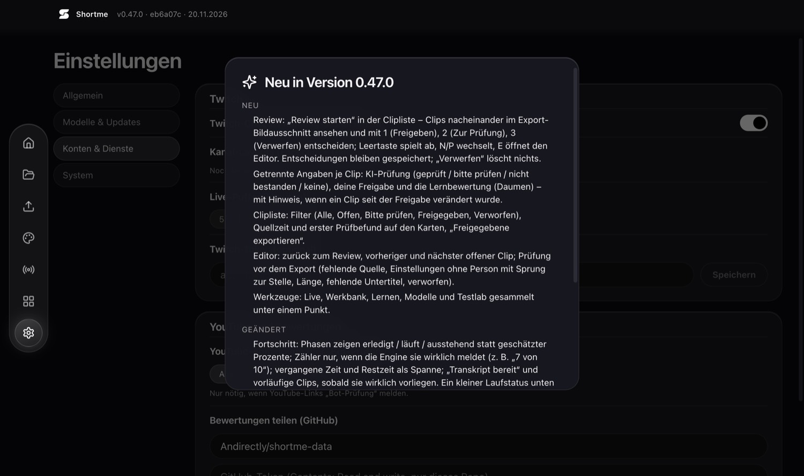
Konten & Dienste.
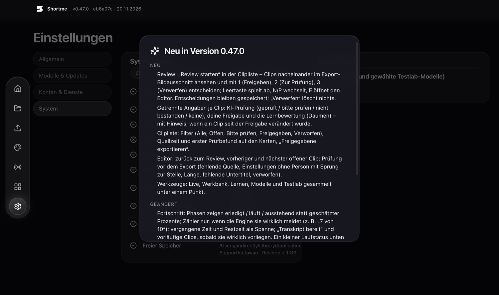
System.
14. Bekannte Schwachstellen
Schon behoben (nach der ersten Fassung dieses Dokuments): widersprüchliche Restzeiten, „läuft“ bei gestopptem Lauf, Export ohne Bestätigung, abgeschnittenes Score-Popup mit falscher Engine, veraltete Engine-Beschreibung, überlappende Beschriftungen in der Zeitleiste.
Wartezeit: Ein Lauf dauert 25–35 min, die ersten Clips sieht man erst am Ende.
KI-Prüfung bei Vlogs: Fast jeder Clip ist „bitte prüfen“, weil die KI „nicht eigenständig verständlich“ oft anmerkt. Das schwächt die Marke als Signal.
Viele Regler: Untertitel (Schrift, Farben, Kontur, Schatten, Glow, Box, Animation) gibt es doppelt, in Vorlagen und im Editor.
Mehrere Bewertungsebenen: Score, KI-Prüfung, Freigabe und Lernbewertung stehen nebeneinander. Das ist mächtig, aber erklärungsbedürftig.
15. Rahmenbedingungen für Vorschläge
Alles muss lokal laufen, ohne Cloud-KI und ohne Abo. Ein Upload zu TikTok, YouTube oder Instagram ist erlaubt.
Es gibt einen einzigen Nutzer: Teams, Konten oder Teilen sind nicht nötig.
Vorschläge sollen auf Windows (NVIDIA) und Mac (Apple Silicon) gleich funktionieren.
Vorschau und Export nutzen denselben Render-Code. Bearbeitungen sind nicht-destruktiv (Undo/Redo).